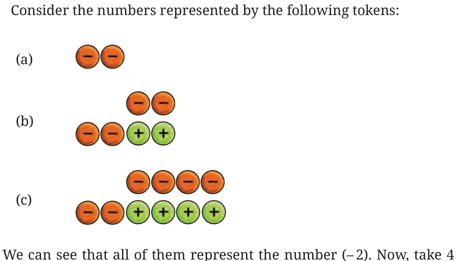
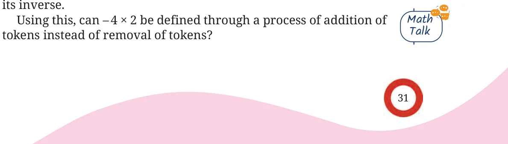
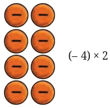

- 1.Using the token interpretation, find the values of:
- (a)\(3 \times\) ( \(- 2)\) (b) ( \(- 5) \times\) ( \(- 2)\)
- (c)( \(- 4) \times\) ( \(- 1)\) (d) ( \(- 7) \times 3\)
- 2.If \(123 \times 456 = 56088\), without calculating, find the value of:
- (a)( \(- 123) \times 456\) (b) ( \(- 123) \times\) ( \(- 456)\)
- (c)\((123) \times\) ( \(- 456)\)
- 3.Try to frame a simple rule to multiply two integers.

times each of these token sets. That is, place each set into the empty bag 4 times.
What integer do we get as the final answer in each case? Do we get different answers because the sets look different, or the same answer because they all represent \(- 2\)?
Check this for \(5 \times 4\), by taking different token sets corresponding to 4. We have seen that \(- 4 \times 2\) is the number obtained by removing 2 positive tokens from the empty bag 4 times. We know that removing or subtracting a number is the same as adding


Since removing 2 positive tokens is the same as adding 2 negative tokens, \(- 4 \times 2\) can also be obtained by adding 2 negative tokens to the empty bag 4 times.